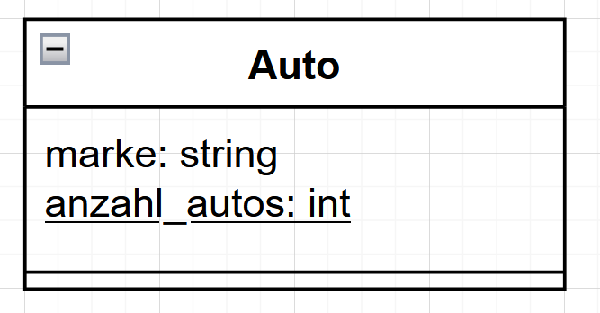

Überblick › LB 4/5 OOP und Softwareentwicklung
4.4 Attribute im Detail
In einer Klasse kannst du unterschiedliche Arten von Attributen definieren. Sie beschreiben den Zustand eines Objekts. Jetzt schauen wir uns genauer an, wie man sie verwendet – und worin der Unterschied zwischen Instanz- und Klassenattributen liegt.
Schritt 1: Instanzattribute
Diese Attribute gehören zu einem konkreten Objekt. Jedes Objekt hat seine eigenen Werte. Im Video siehst du im Speicherbild, dass luna und balu getrennte Speicherplätze für name und rasse haben. Achte auch darauf, was passiert, wenn man nach einem Attribut fragt, das nie mit self. angelegt wurde.
Zum Nachlesen steht das Beispiel aus dem Video in Beispiel 1:
Attribute im Konstruktor initialisieren
Der Konstruktor __init__ sorgt dafür, dass bei jeder Objekterzeugung die Startwerte gesetzt werden. Dort legst du fest, welche Werte ein Objekt bekommt.
class Buch:
def __init__(self, titel, autor):
self.titel = titel
self.autor = autor
buch1 = Buch("1984", "George Orwell")
print(buch1.titel) # Ausgabe: 1984Kurz geprüft 1: Ein zweites Buch AFB I
Mit der Klasse Buch von oben wird b2 = Buch("Momo", "Michael Ende") erzeugt. Was geben print(b2.autor) und print(b2.seiten) aus?
Lösung zeigen
print(b2.autor) gibt Michael Ende aus. print(b2.seiten) bricht mit AttributeError: 'Buch' object has no attribute 'seiten' ab, denn der Konstruktor legt nur titel und autor an.
Weiter mit Schritt 2: Klassenattribute →
Schritt 2: Klassenattribute
Ein Klassenattribut gehört nicht zu einem einzelnen Objekt, sondern zur Klasse selbst – und damit zu allen Objekten gemeinsam.
class Auto:
anzahl_autos = 0 # Klassenattribut
def __init__(self, marke):
self.marke = marke
Auto.anzahl_autos += 1 # Zugriff über den Klassennamen
a1 = Auto("VW")
a2 = Auto("BMW")
print(Auto.anzahl_autos) # Ausgabe: 2Im Video läuft dieses Programm Schritt für Schritt. Im Speicherbild steht das Klassenattribut im Kasten der Klasse, die Instanzattribute stehen in den Objekten. Achte darauf, wo Python bei a1.anzahl_autos sucht – und was eine Zuweisung über ein Objekt anrichtet.
UML-Diagramm: Instanz- und Klassenattribute
Im UML-Diagramm erkennt man den Unterschied an der Unterstreichung:

Instanzattribute wie marke sind normal geschrieben, Klassenattribute wie anzahl_autos sind unterstrichen.
Hinweis: Wann brauche ich Klassenattribute?
Ein Klassenattribut ist wie ein gemeinsamer Notizzettel für alle Objekte einer Klasse. Es speichert etwas, das für alle gemeinsam gilt – egal, wie viele Objekte du erzeugst. Zum Beispiel:
- Wie viele Hunde wurden schon erzeugt?
- Wie hoch ist der Steuersatz für alle Produkte?
- Welche Schule besuchen alle Schülerinnen und Schüler?
Solche Dinge musst du nicht in jedem Objekt einzeln speichern – ein Klassenattribut reicht.
Zum Nachlesen: Die Stolperfalle aus dem Video an einem Onlineshop in Beispiel 2.
Kurz geprüft 2: Drei Autos AFB II
Mit der Klasse Auto von oben werden x = Auto("Opel"), y = Auto("Fiat") und z = Auto("Kia") erzeugt. Danach wird y.anzahl_autos = 10 ausgeführt. Was gibt print(Auto.anzahl_autos, x.anzahl_autos, y.anzahl_autos, z.anzahl_autos) aus?
Lösung zeigen
3 3 10 3. Der Konstruktor hat das Klassenattribut dreimal erhöht. y.anzahl_autos = 10 legt nur in y ein eigenes Instanzattribut an; x und z finden kein eigenes und lesen weiter den Wert 3 aus der Klasse.
Danach: Aufgabe 4.4.1 – Spieler-Statistik, Aufgabe 4.4.2 – Bücher mit Steuer und Aufgabe 4.4.3 – Ausgaben vorhersagen.
Weiter mit Schritt 3: Zwei Namen, ein Objekt →
Schritt 3: Zwei Namen, ein Objekt
Eine Variable enthält nicht das Objekt selbst, sondern einen Verweis darauf – im Speicherbild ist das der Pfeil. Bei einer Zuweisung wie hund = luna wird deshalb kein Objekt kopiert, sondern nur ein zweiter Pfeil auf dasselbe Objekt gesetzt. Man nennt das auch Aliasing (Alias = zweiter Name). Im Video siehst du, was passiert, wenn man das Objekt über den zweiten Namen ändert. Neu ist der Operator is; er wird im Video kurz gezeigt.
Kurz geprüft 3: Liste mit zwei Namen AFB I–II
Was geben die letzten drei Zeilen aus?
a = [5]
b = a
b.append(7)
c = [5, 7]
print(a)
print(a is b)
print(a is c)Lösung zeigen
[5, 7], True, False. a und b sind zwei Namen für dieselbe Liste, deshalb sieht man die 7 auch über a. c hat zwar dieselben Werte, ist aber eine eigene, neue Liste.
Danach: Aufgabe 4.4.5 – Fehler finden: die geteilte Warteliste.
Praxisbezug: Konfiguration und Zähler
Alltag: Ändert der Staat den Mehrwertsteuersatz, müssen Kassensysteme im Supermarkt den Wert für alle Produkte gleichzeitig umstellen – ein typischer Fall für einen gemeinsam genutzten Wert statt Tausender Einzelwerte.
Beruf: Entwicklerinnen und Entwickler von Warenwirtschafts- und Kassensoftware legen solche gemeinsamen Werte als Klassenattribute oder als zentrale Konfiguration an. So bleibt die Software wartbar, wenn sich Steuersätze, Währungen oder Grenzwerte ändern.
Zusammenfassung
Instanzattribute legt der Konstruktor mit self.name = … in jedem Objekt einzeln an; jedes Objekt hat eigene Werte. Ein Klassenattribut steht im Klassenrumpf, existiert nur einmal und wird über den Klassennamen geändert; im UML-Diagramm ist es unterstrichen. Python sucht ein Attribut zuerst im Objekt, dann in der Klasse – eine Zuweisung über ein Objekt legt deshalb ein neues Instanzattribut an. Variablen sind Verweise: b = a gibt demselben Objekt einen zweiten Namen, is prüft, ob es dasselbe Objekt ist.
Das Wichtigste
Instanzattribut: Gehört zu einem einzelnen Objekt; jedes Objekt hat eigene Werte. Es wird im Konstruktor mit self.name = … angelegt.
Klassenattribut: Gehört zur Klasse selbst und wird von allen Objekten gemeinsam genutzt. Es steht direkt im Klassenrumpf und wird über den Klassennamen verändert, z. B. Auto.anzahl_autos += 1.
Konstruktor __init__: Sorgt dafür, dass jedes neue Objekt von Anfang an sinnvoll belegte Attribute hat.
self: Verweist auf das Objekt, das gerade erzeugt bzw. benutzt wird.
Zwei Namen, ein Objekt: b = a gibt einem vorhandenen Objekt einen zweiten Namen, es entsteht kein neues Objekt. a is b prüft, ob beide Namen auf dasselbe Objekt zeigen; zwei Objekte mit gleichen Werten bleiben verschiedene Objekte.
Grundaufgaben
Aufgabe 4.4.1: Spieler-Statistik AFB I
Erstelle eine Klasse Spieler mit den Attributen:
name(Instanzattribut)anzahl_spieler(Klassenattribut)
Der Konstruktor soll anzahl_spieler bei jedem neuen Objekt um 1 erhöhen. Erzeuge drei Objekte und gib am Ende die Gesamtzahl aus.
Aufgabe 4.4.2: Bücher mit Steuer AFB II
Erstelle eine Klasse Buch mit:
titelundpreis_nettoals Instanzattributenmwst(Mehrwertsteuer) als Klassenattribut – z. B. 7 %
➤ Erzeuge mindestens zwei Bücher und gib für jedes den Titel und den Bruttopreis aus.
➤ Ändere danach den Mehrwertsteuersatz und zeige, wie sich das auf die Ausgabe des Preises auswirkt.
Das kann ich jetzt
Grau steht, was der Lehrplan verlangt, darunter, was das für dieses Thema konkret heißt. Hake einen Punkt ab, wenn er in deinem Hefter zusammengefasst ist und du ihn ohne Hilfe kannst. Wie du ihn zusammenfasst, entscheidest du selbst. Die Haken speichert nur dein Browser.
Lehrplan LB 4 Attribut und Attributwert (Kennen von Begriffen der objektorientierten Programmierung)